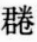

康熙五十五年。聖祖仁皇帝御定。古小學存於今者。惟說文玉篇爲最舊。說文體皆篆籀。不便拖行。玉篇字無次序。亦難檢閱。類篇以下諸書。則惟好古者藏弆之。世弗通用。所通用者。率梅膺祚之字彙。張自烈之正字通。然字彙疎舛。正字通尤爲蕪雜。均不足依據。康熙四十九年。乃諭大學士陳廷敬等。删繁補漏。辨疑訂譌。勒爲此書。仍兩家舊目。以十二辰紀十二集。而每集分三子卷。凡一百一十九部。冠以總目檢字辨似等韻。各一卷。殿以補遺備考各一卷。部首之字。以畫之多寡爲序。部中之字。亦然。每字之下。則先列唐韻廣韻集韻韻會正韻之音。唐韻久佚。今能一一徵引者。徐鉉校說文所用。卽唐韻之翻切也。次訓釋其義。次列別音別義。次列古音。均引證舊典。詳其始末。不使一語無稽。有所考辨。卽附於註末。又每字必載古體。用說文例。改從隸書。用集韻例。兼載重文。別體俗書譌字。用干祿字書例。皆綴於註。後用復古編例。仍從其字之偏旁。別出於諸部。用廣韻互見例。至於增入之字。各依字畫多寡。列於其數之末。則說文之新附。禮部韻略之續降例也。其補遺一卷。收稍僻之字。備考一卷。收不可施用之字。凡古籍所載。務使包括無遺。蓋拘泥古義者。自說文九千字外。皆斥爲僞體。遂至音韻必作音均。衣裳必作衣常。韓愈書爲韓瘉。諸葛亮書爲諸葛諒。動生滯礙。於事理難通。固爲不可。若夫孫休之所自造。王起之所未識。傅奕之稱埿人。段成式之作字。皆考之古而無徵。用之今而多駭。存而竝列。則通儒病其荒唐。削之不登。則淺儒疑其挂漏。別爲附錄。等諸外篇。尤所謂去取得中。權衡盡善者矣。御製序文。謂古今形體之辨。方言聲氣之殊。部分班列。開卷了然。無一義之不詳。無一音之不備。信乎六書之淵海。七音之準繩也。